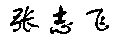
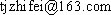
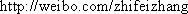

Zhifei ZHANG Department of Computer Science and Technology
Tongji University, China
- 2008.09-present Ph.D. candidate in Pattern Recognition and Intelligent Systems,
Department of Computer Science and Technology, Tongji University,
Supervisor: Prof. Duoqian Miao - 2004.09-2008.07 B.Sc. in Computer Science and Technology,
Department of Computer Science and Technology, Tongji University,
GPA: 4.71/5.00 Rank: 1/138
- Natural Language Processing
¡ª Text Classification, Sentiment Analysis - Machine Learning
¡ª Rough Sets, Multi-label Learning, Topic Model
Journal Article
- Zhifei Zhang, Duoqian Miao. Feature Selection for Text Categorization Based on Rough Sets. CAAI Transactions on Intelligent Systems, 2009, 4(5): 453-457.(In Chinese)
- Duoqian Miao, Can Gao, Nan Zhang, Zhifei Zhang. Diverse Reduct Subspaces Based Co-Ttraining for Partially Labeled Data. International Journal of Approximate Reasoning, 2011, 52 (8): 1103-1117.
Conference Paper
- Zhifei Zhang, Duoqian Miao, Zhihua Wei, Lei Wang. Document-level Sentiment Classification Based on Behavior-Knowledge Space Method. ADMA 2012, LNAI 7713, 330-339.
- Zhifei Zhang, Duoqian Miao, Can Gao. Short Text Classification Based on Latent Dirichlet Allocation. In: Proceedings of the 6th Youth Conference of Computational Linguistics (YCCL 2012), 78-83.(In Chinese)
- National Graduate Scholarship of China, 2012 (Top 5 of the department)
- Academic Scholarship for Doctoral Candidates of Tongji University, 2012 (Top 15 of the university)
- Excellent Graduate Student Leader Scholarship of Tongji University, 2011
- Second Prize of National Post-Graduate Mathematical Contest in Modeling, 2010
- Second Prize of National Post-Graduate Mathematical Contest in Modeling, 2009
- Excellent Student of Tongji University, 2009
- Excellent Graduate of Shanghai (Bachlor), 2008, (Top 5% of the department)
- Excellent Bachelor Thesis Award of Tongji University, 2008 (Top 2 of the department)
- Top-Class Scholarship of Tongji University for Undergraduates, 2007 (Top 10 of the university)
- First-Class Scholarship of Tongji University for Undergraduates, 2006 (Top 5% of the department)
- First-Class Scholarship of Tongji University for Undergraduates, 2005 (Top 5% of the department)
| Mail: | ZHIFEI ZHANG | Office: | Room 501, Telecom Building, |
| School of Electronics and Information Engineering | Jiading Campus of Tongji University | ||
| Tongji University, Jiading Campus | Email: |  | |
| No.4800 Cao'an Highway, Jiading District | Weibo: |  | |
| Shanghai 201804, China | GTalk: |
Copyright @ IIP Lab. of Tongji University, 2011-2013
This page is maintained by Zhifei, latest updated on 2013-3-10